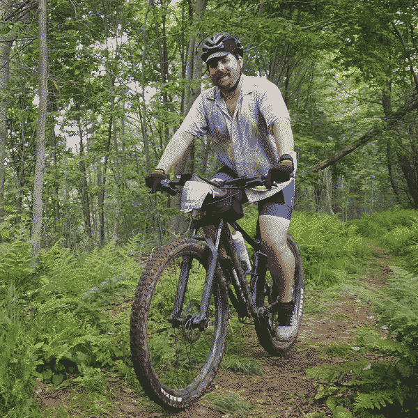

Last updated: Sun Jul 21 2024 | Permalink | RSS
A dithered photo of Travis riding a mountain bike in the woods
After reading a blog post from Andrew Dana Hudson about thermochauvinism, I have begun referring to July as "Hot Winter," a time of year when I spend most of my time indoors because it is uncomfortable and even dangerous to be outside. I tend to spend my free time similarly to actual winter: video games, home DIY, reading, taking care of house plants, and wishing I could ride my bike or work in my garden.
As soon as the heat broke last week I went out and went on a longer mountain bike ride than usual. It felt wonderful to be out on the trails, using my body, and just gazing at water, birds, and plants. Riding a bike is almost always just a shortcut to feeling better for me. Physical exertion and fresh air do wonderful for my dopamine producers.
In the first week of June, I rode with a friend on Grinduro PA, a 70(-ish) mile gravel and single-track ride in and out of Loyalsock State Forest. It was a challenge but I was pretty in shape for it, though I could certainly have used more training on climbing specifically. It was a great time and worth doing if for nothing else than reminding me I am capable and enjoy days where "all you have to do is ride you bike" as one of my Bike & Build teammates puts it.
Having done that ride towards the start of the summer has been good for me in riding casually afterward and having a recent difficult accomplishment to comapre against when a ride or section of a ride starts feeling like a slog. I have also been feeling this in my day job lately. Getting stuck on a particular issue and strugglig to find a solution, but pushing through with memories of solving past tough problems or errors and remembering the satisfaction of having beat those.
That is such a hard thing to overcome when working on any project: A problem without an obvious solution and little findable community support. These are awful and can end a project without enough skill, motivation, or some combination of the two. I have always struggled with asking for help and been too stubborn with myself that I can definitely find the answer on this next search around. Luckily I have great colleagues and peers who are happy to work through a problem with me.
For other developers (or anyone working on any shape of project): Please ask your peers, community, and colleagues for help. Your project is worth completing or at least worth getting to a proof-of-concept well enough to know it's worth abandoning.